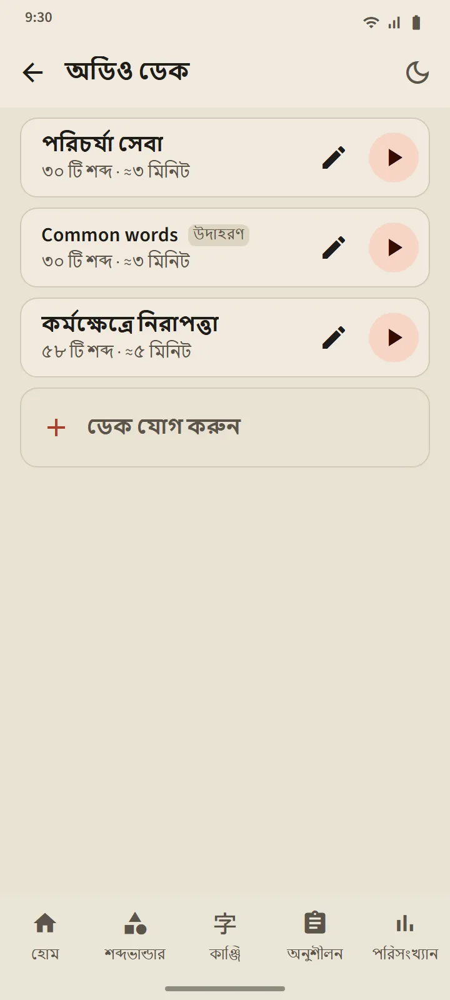

নিজের বানানো অডিও ডেক
5 থেকে 100টি শব্দের একটি ডেক বানান: একটি একটি করে খুঁজে নিন, অথবা যেকোনো শব্দভান্ডার ডেক থেকে একসঙ্গে নিন। প্লেয়ার প্রতিটি শব্দ জাপানিতে পড়ে, তার পরে অ্যাপের ভাষায় তার অর্থ (শুধু জাপানির জন্য “অর্থ জোরে পড়ুন” বন্ধ করুন)। বর্তমান শব্দটি ফুরিগানাসহ বড় করে দেখানো হয়; তালিকার কোনো শব্দে ট্যাপ করে সেখানে যান।
নিয়ন্ত্রণ: এলোমেলো, পুনরাবৃত্তি এবং 0.75×, 1× বা 1.25× গতি। স্ক্রিন বন্ধ হলে বা অন্য অ্যাপে গেলেও প্লেয়ার চলতে থাকে; প্লেয়ারের নোটিফিকেশন ও হেডসেটের বোতাম নিয়ন্ত্রণে থাকে।
- বিনামূল্যের সংস্করণে: 3টি ডেক। Premium: সীমাহীন, এবং একটি ডেক একটি অডিও ফাইল (M4A) হিসেবে ডাউনলোড করা যায়।
- সবচেয়ে বেশি ব্যবহৃত শব্দ থেকে স্বয়ংক্রিয়ভাবে একটি নমুনা ডেক, “Common words”, তৈরি হয়; ইচ্ছেমতো সম্পাদনা বা মুছে ফেলুন।
- শোনা কখনো কোনো শব্দের সময়সূচি বা ধাপ বদলায় না।


বলার অনুশীলন: বলুন, তারপর এগিয়ে যান
আপনার জানা বা আয়ত্ত করা একটি শব্দ কার্ডে আসে; মাইক্রোফোন নিজে থেকে চালু হয়, আপনি শব্দটি বলেন, আর ফোন চিনতে পারলে পরের শব্দ আসে। চিনতে না পারলে স্ক্রিনে দেখায় সে কী শুনেছে এবং আবার শোনে; তিনবার চেষ্টার পর একটি উদাহরণ বাজায়। মাইক্রোফোন বোতাম, উদাহরণ বোতাম ও বাদ দিন সবসময় আছে। একটি সেশনে থাকে 5, 10, 15 বা 20টি শব্দ।
আপনার কণ্ঠ প্রক্রিয়া করে আপনার ফোনের স্পিচ-রিকগনিশন সেবা (সাধারণত Google-এর); অ্যাপ তা রেকর্ড বা সংরক্ষণ করে না। শুধু শব্দটি বিচার করা হয়, আপনার উচ্চারণভঙ্গি নয়। স্পিচ রিকগনিশন ভুল শুনতে পারে বলে এই অনুশীলন কোনো শব্দের ধাপ কখনো নামায় না।

কাঞ্জি লেখা: স্ট্রোকে স্ট্রোকে
যে কাঞ্জি আপনি জানেন বা আয়ত্ত করেছেন তার জন্য। শুধু অর্থ ও পঠন দেখানো হয়; আপনি পুরো প্রস্থের একটি ঘরে লেখেন, আর আঙুল তোলার সঙ্গে সঙ্গে প্রতিটি স্ট্রোক যাচাই হয়: আকার, দিক ও ক্রম। সঠিক স্ট্রোক আদর্শ আকারে বসে যায়; ভুল ক্রম বা উল্টো দিক এক বাক্যে প্রত্যাখ্যাত হয়; দুবার ভুলের পর পরের স্ট্রোক শুরুর বিন্দুসহ হালকাভাবে দেখা যায়।
- স্মৃতি থেকে: খালি ঘর। ছায়া সহ: কাঞ্জিটি হালকাভাবে দেখা যায়, ওয়ার্ম-আপের জন্য। ক্রম অনুযায়ী ট্যাপ: কাঞ্জিটি পুরো দেখানো হয়; তার স্ট্রোকগুলো ক্রমানুসারে ট্যাপ করুন।
- অ্যানিমেশন বোতাম যেকোনো সময় পুরো কাঞ্জি লেখার অ্যানিমেশন চালায়।
- দুটি ভিন্ন দিনে সাহায্য ছাড়া স্মৃতি থেকে লিখলে একটি কাঞ্জি লিখতে পারেন হিসেবে গণ্য হয়; প্রতি সেশনে 5, 10 বা 15টি কাঞ্জি।


সবখানে উচ্চারণ
শব্দভান্ডার কার্ড, কাঞ্জি কার্ড, শব্দের বিবরণ, কানা পাঠ, ব্যাকরণের উদাহরণ ও শোনার প্রশ্ন সবই পড়ে শোনায় আপনার ফোনের জাপানি টেক্সট-টু-স্পিচ ইঞ্জিন, তাই কোনো অডিও ফাইল ডাউনলোড করতে হয় না। কণ্ঠের মান প্রতিটি ফোনের ইঞ্জিন অনুযায়ী।